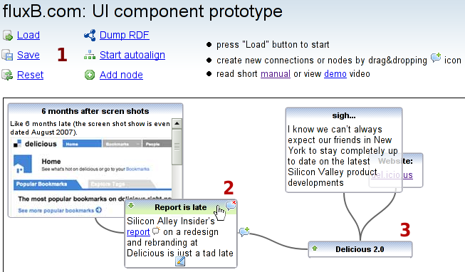
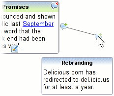
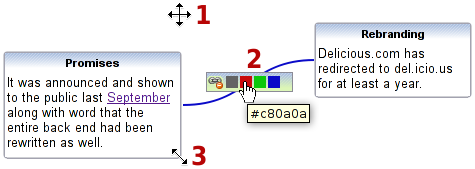
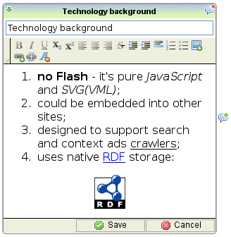
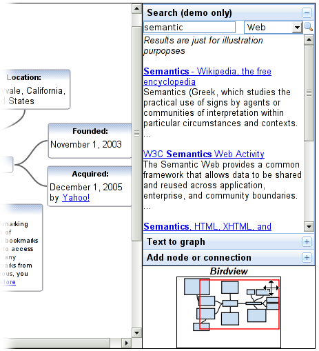

fluxB.com UI prototype short manualreturn to:index page – flash video demo – UI prototype Many of us have the need to present the information on the web visually. This mind-map fluxB UI component meets this demand by offering content presentation in the same way the human mind works by visually connecting concepts and organizing them on top of each other into a general knowledge base. it will be more natural and comfortable for users to organize and share/publish ideas with our tool, comparing to the common writing plain text content/post on the web. We enable users to discuss the content publicly, navigate and search for information that is interconnected, and aggregate various independent sources.  General overview Just after opening fluxB UI, you'll get an interface similar to the picture above, saved graph would be restored from server. Look around, you'll see:
 How to create new nodes and connections Drag-n-drop icon to create new connections or nodes. If you'll release mouse button on spare place - a new node will be created there, if you'll release on existing node - would be created a new connection between nodes  More mouse actions
 Edit mode
If you'll press  Side Bar
This component works in single user mode. It have been tested on Firefox 2+ (Windows, Linux), Internet Explorer 6, Safari 3 (Windows). No performance optimizations have been conducted. First prototype you could find on our site - http://gwt.org.ua/en/odb-ui-proto/ |
|
you could reach us on email:opryymak@gmail.com, phone: +380677786003 or skype ID: oleksandr_pr (contact person - Oleksandr Pryymak) |
 edit node button
edit node button fold/unfold node
fold/unfold node